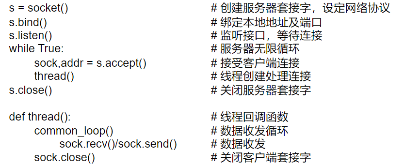
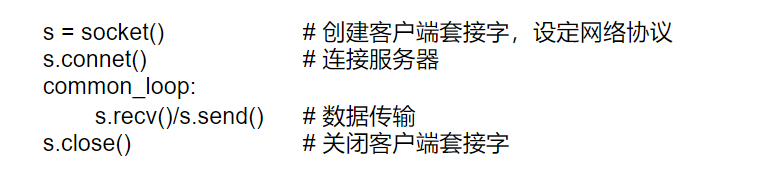

<!DOCTYPE html>


<html lang="zh-CN">
  

    <head>
      <meta charset="utf-8" />
        
      <meta name="description" content="脑海中起毛球的记忆" />
      
      <meta
        name="viewport"
        content="width=device-width, initial-scale=1, maximum-scale=1"
      />
      <title>Python网络编程 |  Wh&#39;s 🛰️ Blogs</title>
  <meta name="generator" content="hexo-theme-ayer">
      
      <link rel="shortcut icon" href="/img/avatar/Jr.ico" />
       
<link rel="stylesheet" href="../../dist/main.css">

      
<link rel="stylesheet" href="../../css/fonts/remixicon.css">

      
<link rel="stylesheet" href="../../css/custom.css">
 
      <script src="https://cdn.staticfile.org/pace/1.2.4/pace.min.js"></script>
       
 

      <link
        rel="stylesheet"
        href="https://cdn.jsdelivr.net/npm/@sweetalert2/theme-bulma@5.0.1/bulma.min.css"
      />
      <script src="https://cdn.jsdelivr.net/npm/sweetalert2@11.0.19/dist/sweetalert2.min.js"></script>

      <!-- mermaid -->
      
      <style>
        .swal2-styled.swal2-confirm {
          font-size: 1.6rem;
        }
      </style>
    </head>
  </html>
</html>


<body>
  <div id="app">
    
      
    <main class="content on">
      <section class="outer">
  <article
  id="post-Python网络编程"
  class="article article-type-post"
  itemscope
  itemprop="blogPost"
  data-scroll-reveal
>
  <div class="article-inner">
    
    <header class="article-header">
       
<h1 class="article-title sea-center" style="border-left:0" itemprop="name">
  Python网络编程
</h1>
 

      
    </header>
     
    <div class="article-meta">
      <a href="" class="article-date">
  <time datetime="2023-06-15T08:55:50.000Z" itemprop="datePublished">2023-06-15</time>
</a>   
<div class="word_count">
    <span class="post-time">
        <span class="post-meta-item-icon">
            <i class="ri-quill-pen-line"></i>
            <span class="post-meta-item-text"> 字数统计:</span>
            <span class="post-count">2k</span>
        </span>
    </span>

    <span class="post-time">
        &nbsp; | &nbsp;
        <span class="post-meta-item-icon">
            <i class="ri-book-open-line"></i>
            <span class="post-meta-item-text"> 阅读时长≈</span>
            <span class="post-count">7 分钟</span>
        </span>
    </span>
</div>
 
    </div>
      
    <div class="tocbot"></div>


  
    <div class="article-entry" itemprop="articleBody">
       
  <h2 id="1-背景">1.背景</h2>
<p>​	局域网上连接有两个设备：树莓派、PC。树莓派仅有供电没有连接其他外设，树莓派上定时执行爬虫脚本，需要经常查看爬虫日志信息检查运行状态。其中一个解决方案就是：通过TCP/IP协议，树莓派作为服务器，PC作为服务端，按需将日志信息发送到PC上。实现前述需求使用的技术是：Python网络编程。</p>
<span id="more"></span>
<p>硬件设备连接示意如下图所示：</p>
<p></p>
<p>下文是对相关基本概念和具体实现的介绍。</p>
<h2 id="2-Python网络编程">2.Python网络编程</h2>
<p>首先，介绍一些网络编程方面的背景资料，然后介绍如何使用Python的一些模块来创建网络化的应用程序。</p>
<h3 id="2-1-客户端-服务器">2.1 客户端/服务器</h3>
<p>客户端/服务器架构（Client/Server Architecture）是一种分布式计算模型，它将系统划分为客户端和服务器两个部分，客户端和服务器通过网络进行通信，实现协同工作。</p>
<p>在客户端/服务器架构中，客户端是指向服务器请求服务的计算机或设备，它通过网络连接到服务器，向服务器发送请求并接收响应。服务器是指提供服务的计算机或设备，它接收客户端的请求并返回响应结果。客户端和服务器之间通过网络连接进行通信，客户端向服务器发送请求并等待响应，服务器接收请求并处理请求，最终将响应结果返回给客户端。</p>
<p>客户端/服务器架构广泛应用于各种计算机系统和应用程序中，包括Web应用程序、数据库系统、文件传输协议、邮件系统、即时通讯工具等等。</p>
<p>客户端/服务器对应于背景中问题的具体实例就是：Raspberry作为服务器存储着需要发送的日志信息，PC作为客户端发起连接请求，raspberry和pc完成网络连接后，pc发出数据请求，raspberry通过网络协议将数据发送到pc，数据发送完成后断开连接。</p>
<h3 id="2-2-TCP-IP协议">2.2 TCP/IP协议</h3>
<p>网络中的设备要想实现互相通信，需要统一的通信协议。早期的计算机网络，都是由各厂商自己规定一套协议，IBM、Apple和Microsoft都有各自的网络协议，互不兼容。为了把全世界的所有不同类型的计算机都连接起来，就必须规定一套全球通用的协议，为了实现互联网这个目标，互联网协议簇（Internet Protocol Suite）就是通用协议标准。因为互联网协议包含了上百种协议标准，但是最重要的两个协议是TCP和IP协议，所以，大家把互联网的协议简称TCP/IP协议。</p>
<p>IP协议负责把数据从一台计算机通过网络发送到另一台计算机。数据被分割成一小块一小块，然后通过IP包发送出去。由于互联网链路复杂，两台计算机之间经常有多条线路，因此，路由器就负责决定如何把一个IP包转发出去。IP包的特点是按块发送，途径多个路由，但不保证能到达，也不保证顺序到达。</p>
<p>TCP协议则是建立在IP协议之上的。TCP协议负责在两台计算机之间建立可靠连接，保证数据包按顺序到达。TCP协议会通过握手建立连接，然后，对每个IP包编号，确保对方按顺序收到，如果包丢掉了，就自动重发。</p>
<p>端口和IP地址：在两台计算机通信时，只发IP地址是不够的，因为同一台计算机上跑着多个网络程序。一个TCP报文来了之后，到底是交给浏览器还是QQ，就需要端口号来区分。每个网络程序都向操作系统申请唯一的端口号，这样，两个进程在两台计算机之间建立网络连接就需要各自的IP地址和各自的端口号。一个进程也可能同时与多个计算机建立链接，因此它会申请很多端口。</p>
<p><a target="_blank" rel="noopener" href="https://www.liaoxuefeng.com/wiki/1016959663602400/1017787663253120">TCP/IP简介 - 廖雪峰的官方网站 (liaoxuefeng.com)</a></p>
<h3 id="2-3-通信端点、套接字">2.3 通信端点、套接字</h3>
<p>通信端点是指网络中的通信双方，它包括本地端点和远程端点。本地端点是指套接字所在主机的IP地址和端口号，远程端点是指连接到本地端点的另一台主机的IP地址和端口号。在套接字通信过程中，本地端点和远程端点进行数据交换，实现数据传输。</p>
<p>套接字（Socket）是一种用于在网络中传输数据的通信机制，它提供了一种通信端点，用于标识网络中的通信双方。套接字是在应用层和传输层之间的接口，它定义了通信的协议、IP地址和端口号等信息。</p>
<p>在计算机网络中，每个主机都有一个唯一的IP地址，用于标识主机在网络中的位置。端口号用于标识主机中的进程。套接字通过IP地址和端口号来标识网络中的通信端点。</p>
<p>套接字和通信端点是网络通信中非常重要的概念，它们是实现网络通信的基础。通过套接字和通信端点，应用程序可以在网络中进行数据传输，实现不同计算机之间的数据交换。</p>
<h3 id="2-4-代码实现">2.4 代码实现</h3>
<p><strong>服务端</strong></p>
<p></p>
<figure class="highlight python"><table><tr><td class="gutter"><pre><span class="line">1</span><br><span class="line">2</span><br><span class="line">3</span><br><span class="line">4</span><br><span class="line">5</span><br><span class="line">6</span><br><span class="line">7</span><br><span class="line">8</span><br><span class="line">9</span><br><span class="line">10</span><br><span class="line">11</span><br><span class="line">12</span><br><span class="line">13</span><br><span class="line">14</span><br><span class="line">15</span><br><span class="line">16</span><br><span class="line">17</span><br><span class="line">18</span><br><span class="line">19</span><br><span class="line">20</span><br><span class="line">21</span><br><span class="line">22</span><br><span class="line">23</span><br><span class="line">24</span><br><span class="line">25</span><br><span class="line">26</span><br><span class="line">27</span><br><span class="line">28</span><br><span class="line">29</span><br><span class="line">30</span><br><span class="line">31</span><br><span class="line">32</span><br><span class="line">33</span><br><span class="line">34</span><br><span class="line">35</span><br><span class="line">36</span><br><span class="line">37</span><br><span class="line">38</span><br><span class="line">39</span><br><span class="line">40</span><br><span class="line">41</span><br><span class="line">42</span><br><span class="line">43</span><br><span class="line">44</span><br><span class="line">45</span><br><span class="line">46</span><br><span class="line">47</span><br><span class="line">48</span><br><span class="line">49</span><br><span class="line">50</span><br><span class="line">51</span><br><span class="line">52</span><br><span class="line">53</span><br><span class="line">54</span><br><span class="line">55</span><br><span class="line">56</span><br><span class="line">57</span><br><span class="line">58</span><br><span class="line">59</span><br><span class="line">60</span><br><span class="line">61</span><br><span class="line">62</span><br><span class="line">63</span><br><span class="line">64</span><br><span class="line">65</span><br></pre></td><td class="code"><pre><span class="line"><span class="comment">#-*- coding:utf-8 -*-</span></span><br><span class="line"><span class="string">&quot;&quot;&quot;</span></span><br><span class="line"><span class="string">    网络通信服务器</span></span><br><span class="line"><span class="string">&quot;&quot;&quot;</span></span><br><span class="line"><span class="keyword">import</span> socket</span><br><span class="line"><span class="keyword">import</span> threading</span><br><span class="line"><span class="keyword">import</span> time</span><br><span class="line"></span><br><span class="line">log_file = <span class="string">r&quot;D:\Code\TimeVisual\ToolPy\chongbuluo.log&quot;</span></span><br><span class="line"></span><br><span class="line"></span><br><span class="line"><span class="comment">#每个连接都必须创建新线程（或进程）来处理，否则，单线程在处理连接的过程中，无法接受其他客户端的连接</span></span><br><span class="line"><span class="function"><span class="keyword">def</span> <span class="title">tcplink</span>(<span class="params">sock, addr</span>):</span></span><br><span class="line">    <span class="built_in">print</span>(<span class="string">&#x27;Accept new connection from %s:%s...&#x27;</span> % addr)</span><br><span class="line">    time.sleep(<span class="number">1</span>)</span><br><span class="line">    <span class="built_in">print</span>(<span class="string">&quot;服务器:发送数据包&quot;</span>)</span><br><span class="line">    <span class="comment"># 打开文件并发送数据</span></span><br><span class="line">    <span class="keyword">with</span> <span class="built_in">open</span>(log_file, <span class="string">&#x27;rb&#x27;</span>) <span class="keyword">as</span> f:</span><br><span class="line">        <span class="keyword">while</span> <span class="literal">True</span>:</span><br><span class="line">            data = f.read(<span class="number">1024</span>)</span><br><span class="line">            <span class="keyword">if</span> <span class="keyword">not</span> data:</span><br><span class="line">                <span class="built_in">print</span>(<span class="string">&quot;数据包发送完成&quot;</span>)</span><br><span class="line">                <span class="keyword">break</span></span><br><span class="line">            sock.sendall(data)</span><br><span class="line">    sock.close()</span><br><span class="line">    <span class="built_in">print</span>(<span class="string">&#x27;Connection from %s:%s closed.&#x27;</span> % addr)</span><br><span class="line"></span><br><span class="line"></span><br><span class="line"><span class="comment"># 获取以太网IPv4地址</span></span><br><span class="line"><span class="function"><span class="keyword">def</span> <span class="title">get_ethernet_ipv4</span>():</span></span><br><span class="line">    <span class="keyword">try</span>:</span><br><span class="line">        <span class="comment"># 创建套接字</span></span><br><span class="line">        s = socket.socket(socket.AF_INET, socket.SOCK_DGRAM)</span><br><span class="line">        <span class="comment"># 连接到百度服务器</span></span><br><span class="line">        s.connect((<span class="string">&#x27;www.baidu.com&#x27;</span>, <span class="number">80</span>))</span><br><span class="line">        <span class="comment"># 获取套接字的本地协议地址，即以太网IPv4地址</span></span><br><span class="line">        ethernet_ipv4 = s.getsockname()[<span class="number">0</span>]</span><br><span class="line">        s.close()</span><br><span class="line">        <span class="keyword">return</span> ethernet_ipv4</span><br><span class="line">    <span class="keyword">except</span>:</span><br><span class="line">        <span class="keyword">return</span> <span class="literal">None</span></span><br><span class="line"></span><br><span class="line"></span><br><span class="line"><span class="comment"># 创建一个基于IPv4和TCP协议的Socket</span></span><br><span class="line">s = socket.socket(socket.AF_INET, socket.SOCK_STREAM)</span><br><span class="line"><span class="comment"># 绑定监听的地址和端口</span></span><br><span class="line">ethernet_ipv4 = get_ethernet_ipv4()</span><br><span class="line"><span class="keyword">if</span> ethernet_ipv4 <span class="keyword">is</span> <span class="keyword">not</span> <span class="literal">None</span>:</span><br><span class="line">    <span class="built_in">print</span>(<span class="string">&#x27;ipv4:&#x27;</span>, ethernet_ipv4)</span><br><span class="line">    s.bind((ethernet_ipv4, <span class="number">9999</span>))</span><br><span class="line"><span class="keyword">else</span>:</span><br><span class="line">    s.bind((<span class="string">&#x27;127.0.0.1&#x27;</span>, <span class="number">9999</span>))</span><br><span class="line"></span><br><span class="line"><span class="comment"># 开始监听端口</span></span><br><span class="line">s.listen(<span class="number">5</span>)</span><br><span class="line"><span class="built_in">print</span>(<span class="string">&#x27;Waiting for connection...&#x27;</span>)</span><br><span class="line"></span><br><span class="line"><span class="comment"># 等待连接</span></span><br><span class="line"><span class="keyword">while</span> <span class="literal">True</span>:</span><br><span class="line">    <span class="comment"># 接受一个新连接:</span></span><br><span class="line">    sock, addr = s.accept()</span><br><span class="line">    <span class="comment"># 创建新线程来处理TCP连接:</span></span><br><span class="line">    t = threading.Thread(target=tcplink, args=(sock, addr))</span><br><span class="line">    t.start()</span><br><span class="line"></span><br></pre></td></tr></table></figure>
<p><strong>客户端</strong></p>
<p></p>
<figure class="highlight python"><table><tr><td class="gutter"><pre><span class="line">1</span><br><span class="line">2</span><br><span class="line">3</span><br><span class="line">4</span><br><span class="line">5</span><br><span class="line">6</span><br><span class="line">7</span><br><span class="line">8</span><br><span class="line">9</span><br><span class="line">10</span><br><span class="line">11</span><br><span class="line">12</span><br><span class="line">13</span><br><span class="line">14</span><br><span class="line">15</span><br><span class="line">16</span><br><span class="line">17</span><br><span class="line">18</span><br><span class="line">19</span><br><span class="line">20</span><br><span class="line">21</span><br><span class="line">22</span><br><span class="line">23</span><br><span class="line">24</span><br><span class="line">25</span><br><span class="line">26</span><br><span class="line">27</span><br><span class="line">28</span><br><span class="line">29</span><br><span class="line">30</span><br><span class="line">31</span><br><span class="line">32</span><br><span class="line">33</span><br><span class="line">34</span><br><span class="line">35</span><br><span class="line">36</span><br><span class="line">37</span><br><span class="line">38</span><br><span class="line">39</span><br></pre></td><td class="code"><pre><span class="line"><span class="comment">#-*- coding:utf-8 -*-</span></span><br><span class="line"><span class="string">&quot;&quot;&quot;</span></span><br><span class="line"><span class="string">    网络通信客户端</span></span><br><span class="line"><span class="string">&quot;&quot;&quot;</span></span><br><span class="line"><span class="keyword">import</span> socket</span><br><span class="line"><span class="keyword">import</span> time</span><br><span class="line"></span><br><span class="line">recv_log = <span class="string">r&quot;D:\Code\TimeVisual\ToolPy\recv.log&quot;</span></span><br><span class="line">s = socket.socket(socket.AF_INET, socket.SOCK_STREAM)</span><br><span class="line"></span><br><span class="line">connected = <span class="literal">False</span></span><br><span class="line">connecting_cnt = <span class="number">0</span></span><br><span class="line"><span class="keyword">while</span> <span class="keyword">not</span> connected <span class="keyword">and</span> connecting_cnt &lt; <span class="number">5</span>:</span><br><span class="line">    <span class="keyword">try</span>:</span><br><span class="line">        <span class="comment"># 建立连接:</span></span><br><span class="line">        s.connect((<span class="string">&#x27;192.168.1.105&#x27;</span>, <span class="number">9999</span>))</span><br><span class="line">        connected = <span class="literal">True</span></span><br><span class="line">    <span class="keyword">except</span> socket.error:</span><br><span class="line">        <span class="built_in">print</span>(<span class="string">&quot;连接失败,1秒后重试...&quot;</span>)</span><br><span class="line">        time.sleep(<span class="number">1</span>)</span><br><span class="line">    connecting_cnt += <span class="number">1</span></span><br><span class="line"><span class="comment"># 接受数据文件</span></span><br><span class="line"><span class="built_in">print</span>(<span class="string">&quot;开始接收数据包...&quot;</span>)</span><br><span class="line">buffer = []</span><br><span class="line"><span class="keyword">while</span> <span class="literal">True</span>:</span><br><span class="line">    <span class="comment"># 每次最多接收1k字节:</span></span><br><span class="line">    d = s.recv(<span class="number">1024</span>)</span><br><span class="line">    <span class="keyword">if</span> d:</span><br><span class="line">        buffer.append(d)</span><br><span class="line">    <span class="keyword">else</span>:</span><br><span class="line">        <span class="keyword">break</span></span><br><span class="line"><span class="comment"># 把接收的数据写入文件:</span></span><br><span class="line"></span><br><span class="line"><span class="keyword">with</span> <span class="built_in">open</span>(recv_log, <span class="string">&#x27;wb&#x27;</span>) <span class="keyword">as</span> f:</span><br><span class="line">    <span class="keyword">for</span> d <span class="keyword">in</span> buffer:</span><br><span class="line">        f.write(d)</span><br><span class="line"><span class="built_in">print</span>(<span class="string">&quot;数据接收完成!&quot;</span>)</span><br><span class="line">s.close()</span><br><span class="line"></span><br></pre></td></tr></table></figure>
<p><code>扩展阅读</code></p>
<p><a target="_blank" rel="noopener" href="http://shouce.jb51.net/core-python-2e/19.html">网络编程 | Python 核心编程 第二版 (jb51.net)</a></p>
 
      <!-- reward -->
      
    </div>
    

    <!-- copyright -->
    
    <div class="declare">
      <ul class="post-copyright">
        <li>
          <i class="ri-copyright-line"></i>
          <strong>版权声明： </strong>
          
          本博客所有文章除特别声明外，著作权归作者所有。转载请注明出处！
          
        </li>
      </ul>
    </div>
    
    <footer class="article-footer">
       
<div class="share-btn">
      <span class="share-sns share-outer">
        <i class="ri-share-forward-line"></i>
        分享
      </span>
      <div class="share-wrap">
        <i class="arrow"></i>
        <div class="share-icons">
          
          <a class="weibo share-sns" href="javascript:;" data-type="weibo">
            <i class="ri-weibo-fill"></i>
          </a>
          <a class="weixin share-sns wxFab" href="javascript:;" data-type="weixin">
            <i class="ri-wechat-fill"></i>
          </a>
          <a class="qq share-sns" href="javascript:;" data-type="qq">
            <i class="ri-qq-fill"></i>
          </a>
          <a class="douban share-sns" href="javascript:;" data-type="douban">
            <i class="ri-douban-line"></i>
          </a>
          <!-- <a class="qzone share-sns" href="javascript:;" data-type="qzone">
            <i class="icon icon-qzone"></i>
          </a> -->
          
          <a class="facebook share-sns" href="javascript:;" data-type="facebook">
            <i class="ri-facebook-circle-fill"></i>
          </a>
          <a class="twitter share-sns" href="javascript:;" data-type="twitter">
            <i class="ri-twitter-fill"></i>
          </a>
          <a class="google share-sns" href="javascript:;" data-type="google">
            <i class="ri-google-fill"></i>
          </a>
        </div>
      </div>
</div>

<div class="wx-share-modal">
    <a class="modal-close" href="javascript:;"><i class="ri-close-circle-line"></i></a>
    <p>扫一扫，分享到微信</p>
    <div class="wx-qrcode">
      
    </div>
</div>

<div id="share-mask"></div>  
    </footer>
  </div>

   
  <nav class="article-nav">
    
      <a href="../Kalman/" class="article-nav-link">
        <strong class="article-nav-caption">上一篇</strong>
        <div class="article-nav-title">
          
            Kalman
          
        </div>
      </a>
    
    
      <a href="../SVM-1/" class="article-nav-link">
        <strong class="article-nav-caption">下一篇</strong>
        <div class="article-nav-title">SVM(Support Vector Machine)——交叉验证</div>
      </a>
    
  </nav>

  
   
  
   
    <script src="https://cdn.staticfile.org/twikoo/1.4.18/twikoo.all.min.js"></script>
    <div id="twikoo" class="twikoo"></div>
    <script>
        twikoo.init({
            envId: ""
        })
    </script>
 
</article>

</section>
      <footer class="footer">
  <div class="outer">
    <ul>
      <li>
        Copyrights &copy;
        2020-2023
        <i class="ri-heart-fill heart_icon"></i> Wh
      </li>
    </ul>
    <ul>
      <li>
        
      </li>
    </ul>
    <ul>
      <li>
        
        
        <span>
  <span><i class="ri-user-3-fill"></i>访问人数:<span id="busuanzi_value_site_uv"></span></span>
  <span class="division">|</span>
  <span><i class="ri-eye-fill"></i>浏览次数:<span id="busuanzi_value_page_pv"></span></span>
</span>
        
      </li>
    </ul>
    <ul>
      
    </ul>
    <ul>
      
    </ul>
    <ul>
      <li>
        <!-- cnzz统计 -->
        
      </li>
    </ul>
  </div>
</footer>    
    </main>
    <div class="float_btns">
      <div class="totop" id="totop">
  <i class="ri-arrow-up-line"></i>
</div>

<div class="todark" id="todark">
  <i class="ri-moon-line"></i>
</div>

    </div>
    <aside class="sidebar on">
      <button class="navbar-toggle"></button>
<nav class="navbar">
  
  <div class="logo">
    <a href="../../index.html"></a>
  </div>
  
  <ul class="nav nav-main">
    
    <li class="nav-item">
      <a class="nav-item-link" href="../../index.html">主页</a>
    </li>
    
    <li class="nav-item">
      <a class="nav-item-link" href="../../archives">归档</a>
    </li>
    
    <li class="nav-item">
      <a class="nav-item-link" href="../../categories">分类</a>
    </li>
    
    <li class="nav-item">
      <a class="nav-item-link" href="../../tags">标签</a>
    </li>
    
    <li class="nav-item">
      <a class="nav-item-link" href="../../about">关于我</a>
    </li>
    
  </ul>
</nav>
<nav class="navbar navbar-bottom">
  <ul class="nav">
    <li class="nav-item">
      
      <a class="nav-item-link nav-item-search"  title="搜索">
        <i class="ri-search-line"></i>
      </a>
      
      
    </li>
  </ul>
</nav>
<div class="search-form-wrap">
  <div class="local-search local-search-plugin">
  <input type="search" id="local-search-input" class="local-search-input" placeholder="Search...">
  <div id="local-search-result" class="local-search-result"></div>
</div>
</div>
    </aside>
    <div id="mask"></div>

<!-- #reward -->
<div id="reward">
  <span class="close"><i class="ri-close-line"></i></span>
  <p class="reward-p"><i class="ri-cup-line"></i>请我喝杯咖啡吧~</p>
  <div class="reward-box">
    
    <div class="reward-item">
      
      <span class="reward-type">支付宝</span>
    </div>
    
    
    <div class="reward-item">
      
      <span class="reward-type">微信</span>
    </div>
    
  </div>
</div>
    
<script src="../../js/jquery-3.6.0.min.js"></script>
 
<script src="../../js/lazyload.min.js"></script>

<!-- Tocbot -->
 
<script src="../../js/tocbot.min.js"></script>

<script>
  tocbot.init({
    tocSelector: ".tocbot",
    contentSelector: ".article-entry",
    headingSelector: "h1, h2, h3, h4, h5, h6",
    hasInnerContainers: true,
    scrollSmooth: true,
    scrollContainer: "main",
    positionFixedSelector: ".tocbot",
    positionFixedClass: "is-position-fixed",
    fixedSidebarOffset: "auto",
  });
</script>

<script src="https://cdn.staticfile.org/jquery-modal/0.9.2/jquery.modal.min.js"></script>
<link
  rel="stylesheet"
  href="https://cdn.staticfile.org/jquery-modal/0.9.2/jquery.modal.min.css"
/>
<script src="https://cdn.staticfile.org/justifiedGallery/3.8.1/js/jquery.justifiedGallery.min.js"></script>

<script src="../../dist/main.js"></script>

<!-- ImageViewer -->
 <!-- Root element of PhotoSwipe. Must have class pswp. -->
<div class="pswp" tabindex="-1" role="dialog" aria-hidden="true">

    <!-- Background of PhotoSwipe. 
         It's a separate element as animating opacity is faster than rgba(). -->
    <div class="pswp__bg"></div>

    <!-- Slides wrapper with overflow:hidden. -->
    <div class="pswp__scroll-wrap">

        <!-- Container that holds slides. 
            PhotoSwipe keeps only 3 of them in the DOM to save memory.
            Don't modify these 3 pswp__item elements, data is added later on. -->
        <div class="pswp__container">
            <div class="pswp__item"></div>
            <div class="pswp__item"></div>
            <div class="pswp__item"></div>
        </div>

        <!-- Default (PhotoSwipeUI_Default) interface on top of sliding area. Can be changed. -->
        <div class="pswp__ui pswp__ui--hidden">

            <div class="pswp__top-bar">

                <!--  Controls are self-explanatory. Order can be changed. -->

                <div class="pswp__counter"></div>

                <button class="pswp__button pswp__button--close" title="Close (Esc)"></button>

                <button class="pswp__button pswp__button--share" style="display:none" title="Share"></button>

                <button class="pswp__button pswp__button--fs" title="Toggle fullscreen"></button>

                <button class="pswp__button pswp__button--zoom" title="Zoom in/out"></button>

                <!-- Preloader demo http://codepen.io/dimsemenov/pen/yyBWoR -->
                <!-- element will get class pswp__preloader--active when preloader is running -->
                <div class="pswp__preloader">
                    <div class="pswp__preloader__icn">
                        <div class="pswp__preloader__cut">
                            <div class="pswp__preloader__donut"></div>
                        </div>
                    </div>
                </div>
            </div>

            <div class="pswp__share-modal pswp__share-modal--hidden pswp__single-tap">
                <div class="pswp__share-tooltip"></div>
            </div>

            <button class="pswp__button pswp__button--arrow--left" title="Previous (arrow left)">
            </button>

            <button class="pswp__button pswp__button--arrow--right" title="Next (arrow right)">
            </button>

            <div class="pswp__caption">
                <div class="pswp__caption__center"></div>
            </div>

        </div>

    </div>

</div>

<link rel="stylesheet" href="https://cdn.staticfile.org/photoswipe/4.1.3/photoswipe.min.css">
<link rel="stylesheet" href="https://cdn.staticfile.org/photoswipe/4.1.3/default-skin/default-skin.min.css">
<script src="https://cdn.staticfile.org/photoswipe/4.1.3/photoswipe.min.js"></script>
<script src="https://cdn.staticfile.org/photoswipe/4.1.3/photoswipe-ui-default.min.js"></script>

<script>
    function viewer_init() {
        let pswpElement = document.querySelectorAll('.pswp')[0];
        let $imgArr = document.querySelectorAll(('.article-entry img:not(.reward-img)'))

        $imgArr.forEach(($em, i) => {
            $em.onclick = () => {
                // slider展开状态
                // todo: 这样不好，后面改成状态
                if (document.querySelector('.left-col.show')) return
                let items = []
                $imgArr.forEach(($em2, i2) => {
                    let img = $em2.getAttribute('data-idx', i2)
                    let src = $em2.getAttribute('data-target') || $em2.getAttribute('src')
                    let title = $em2.getAttribute('alt')
                    // 获得原图尺寸
                    const image = new Image()
                    image.src = src
                    items.push({
                        src: src,
                        w: image.width || $em2.width,
                        h: image.height || $em2.height,
                        title: title
                    })
                })
                var gallery = new PhotoSwipe(pswpElement, PhotoSwipeUI_Default, items, {
                    index: parseInt(i)
                });
                gallery.init()
            }
        })
    }
    viewer_init()
</script> 
<!-- MathJax -->
 <script type="text/x-mathjax-config">
  MathJax.Hub.Config({
      tex2jax: {
          inlineMath: [ ['$','$'], ["\\(","\\)"]  ],
          processEscapes: true,
          skipTags: ['script', 'noscript', 'style', 'textarea', 'pre', 'code']
      }
  });

  MathJax.Hub.Queue(function() {
      var all = MathJax.Hub.getAllJax(), i;
      for(i=0; i < all.length; i += 1) {
          all[i].SourceElement().parentNode.className += ' has-jax';
      }
  });
</script>

<script src="https://cdn.staticfile.org/mathjax/2.7.7/MathJax.js"></script>
<script src="https://cdn.staticfile.org/mathjax/2.7.7/config/TeX-AMS-MML_HTMLorMML-full.js"></script>
<script>
  var ayerConfig = {
    mathjax: true,
  };
</script>

<!-- Katex -->

<!-- busuanzi  -->
 
<script src="../../js/busuanzi-2.3.pure.min.js"></script>
 
<!-- ClickLove -->

<!-- ClickBoom1 -->

<!-- ClickBoom2 -->

<!-- CodeCopy -->
 
<link rel="stylesheet" href="../../css/clipboard.css">
 <script src="https://cdn.staticfile.org/clipboard.js/2.0.10/clipboard.min.js"></script>
<script>
  function wait(callback, seconds) {
    var timelag = null;
    timelag = window.setTimeout(callback, seconds);
  }
  !function (e, t, a) {
    var initCopyCode = function(){
      var copyHtml = '';
      copyHtml += '<button class="btn-copy" data-clipboard-snippet="">';
      copyHtml += '<i class="ri-file-copy-2-line"></i><span>COPY</span>';
      copyHtml += '</button>';
      $(".highlight .code pre").before(copyHtml);
      $(".article pre code").before(copyHtml);
      var clipboard = new ClipboardJS('.btn-copy', {
        target: function(trigger) {
          return trigger.nextElementSibling;
        }
      });
      clipboard.on('success', function(e) {
        let $btn = $(e.trigger);
        $btn.addClass('copied');
        let $icon = $($btn.find('i'));
        $icon.removeClass('ri-file-copy-2-line');
        $icon.addClass('ri-checkbox-circle-line');
        let $span = $($btn.find('span'));
        $span[0].innerText = 'COPIED';
        
        wait(function () { // 等待两秒钟后恢复
          $icon.removeClass('ri-checkbox-circle-line');
          $icon.addClass('ri-file-copy-2-line');
          $span[0].innerText = 'COPY';
        }, 2000);
      });
      clipboard.on('error', function(e) {
        e.clearSelection();
        let $btn = $(e.trigger);
        $btn.addClass('copy-failed');
        let $icon = $($btn.find('i'));
        $icon.removeClass('ri-file-copy-2-line');
        $icon.addClass('ri-time-line');
        let $span = $($btn.find('span'));
        $span[0].innerText = 'COPY FAILED';
        
        wait(function () { // 等待两秒钟后恢复
          $icon.removeClass('ri-time-line');
          $icon.addClass('ri-file-copy-2-line');
          $span[0].innerText = 'COPY';
        }, 2000);
      });
    }
    initCopyCode();
  }(window, document);
</script>
 
<!-- CanvasBackground -->

<script>
  if (window.mermaid) {
    mermaid.initialize({ theme: "forest" });
  }
</script>


    
    

  </div>
</body>

</html>